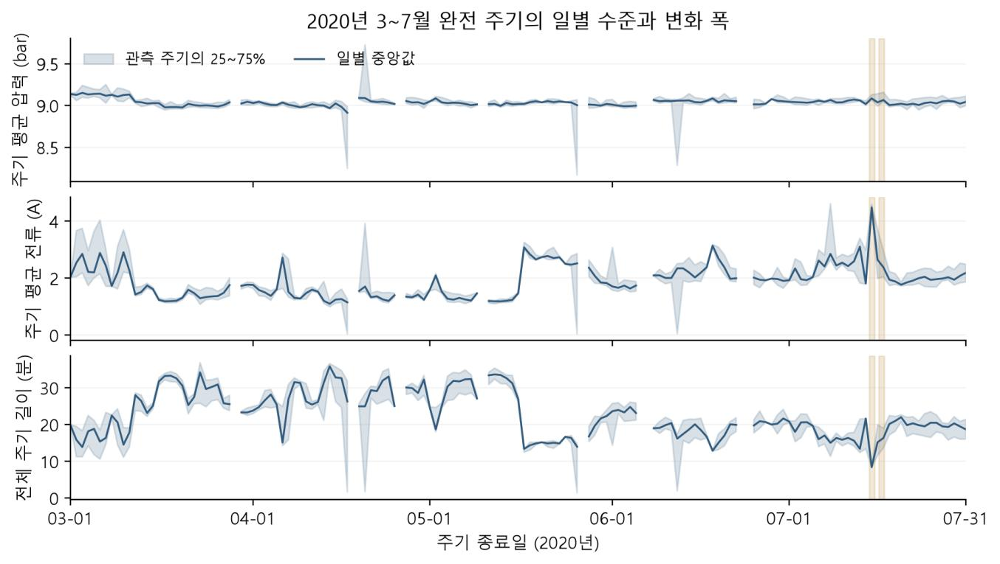
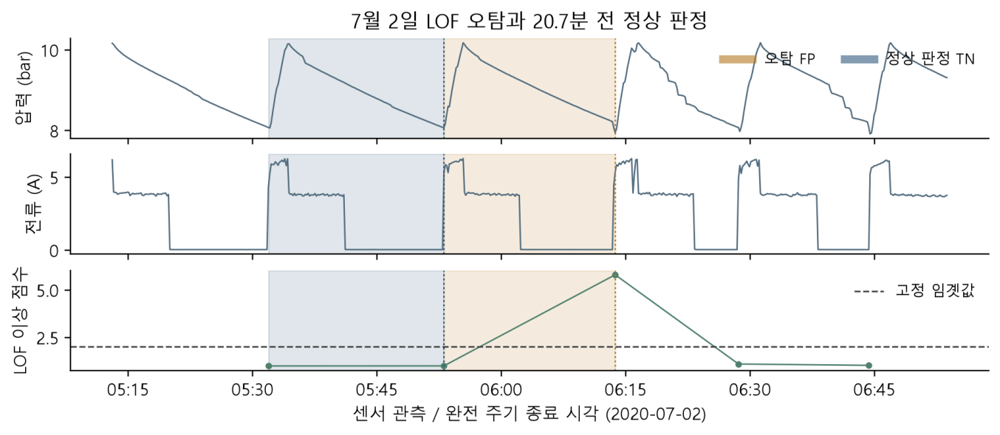
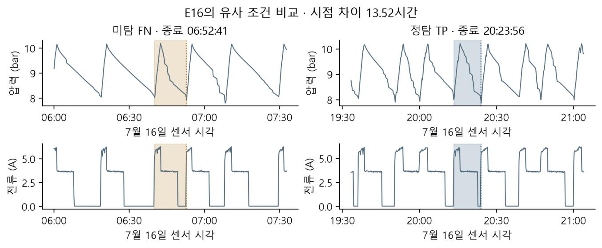

UCI 데이터셋
센서·운전 상태 정의
실제 설비의 시계열 데이터
운전 주기 단위 분석
압력 · 전류 · 운전 상태로 찾는
고장 전 점검 후보
 MetroPT-3 ↗
MetroPT-3 ↗센서·운전 상태 정의
실제 설비의 시계열 데이터
운전 주기 단위 분석
 GitHub · MetroPT-3 ↗
GitHub · MetroPT-3 ↗전처리·특징 선택을 거쳐
다양한 이상 탐지 모델 비교
동일 특징·조건에서
모델 비교
희소 오토인코더(SAE) 기반 탐지
센서 종류별 모델 구성과
다른 오토인코더 비교
고장 기록으로
평가 기준 구성
평가 구간은 고장 24시간 전부터 2시간 전까지
센서 주기의 이상 판정 → 경보 규칙 → 사건 탐지 평가
검증 사건 최소 탐지 목표
센서 기록 · 약 10초 간격
3~7월분석 기간
21구간 → 16사건전문가 고장 기록 정리
TP3압력
Motor_current전류
COMP0 가동 · 1 대기
시간센서 기록 시각
자료: UCI MetroPT-3 · Davari et al. (2021) / 센서 행과 고장 사건은 서로 다른 집계 단위
가동 시작 → 대기 → 다음 가동 시작
기록 구간 분리
시작과 종료가 있는 주기
압력 · 전류 · 시간
10,269 전체 완전 주기 → 7,245 3~7월 분석 주기
7월 정상 → 전조
주기 길이 중앙값19.33 → 8.60분
전류 중앙값2.067 → 4.424A
정상 1,663주기
전조 182주기

구간별 압력 평균 · 전류 평균
각 구간의 길이가 아님
학습 평균에서
벗어난 정도
한 주기를 다른 주기와
분리하는 경로
비슷한 학습 주기들과
얼마나 다른지 비교
점수 계산: 검증 2,754 · 7월 1,948주기 / 성능지표: 검증 2,648 · 7월 1,845주기
| 탐지 목표 | Z-score | IF | LOF |
|---|---|---|---|
| 7 / 9건 | 164 | 36 | 57 |
| 8 / 9건 | 232 | 144 | 61 |
| 9 / 9건 | 283 | 233 | 132 |
5~6월 검증 정상 구간 오탐 경보 수 · 단위: 건 · 1시간 발송 제한 적용
탐지 목표가 8·9건이면, 최소 오탐 모델은 LOF로 달라진다
7건 목표 임곗값: Z-score 1.4475 · IF 0.5352 · LOF 2.0152
LOF 이웃 수(k): 7건 목표 20 · 8건 10 · 9건 50
P 38.50% R 79.12%
F1 0.5180
P 69.41% R 64.84%
F1 0.6705
P 0% R 0%
F1 0.0000
7월 동일 1,845주기 · 경보 제한 전 주기 판정
P 정밀도: 이상 판정 중 전조 비율 / R 재현율: 전조 중 탐지 비율 / F1: 두 지표의 조화평균
Z-score · IF 공통 탐지
E15·E16 탐지 / E14 전조 관측 없음
LOF는 관측 가능한 두 사건 미탐
| 모델 | 전체 경보 | 정상 구간 오탐 |
|---|---|---|
| Z-score | 174건 | 134건 |
| IF | 61건 | 35건 |
| LOF | 35건 | 29건 |
첫 경보는 Z-score가 더 빨랐다: E15 2.14시간 · E16 6.95시간
경보는 1시간 발송 제한 적용 후 집계 / 오탐 주기 수와 경보 수는 집계 단위가 다름
오탐 점수5.8029
정상 비교 점수1.0038
판정 임곗값2.0152

7월 2일 · 20.7분 전 정상 주기와 비교 / 평균 도달거리: 오탐 0.7127 · 정상 0.1144
마지막 대기 구간의 전류 특징(B7)에서 정상 주기와 큰 차이B7: 대기 5구간 중 마지막 구간의 전류 특징
미탐 점수0.5203
정탐 점수0.5573
판정 임곗값0.5352

같은 E16 사건 · 13.52시간 차이 / 주기 길이: 미탐 12.73분 · 정탐 10.57분
놓친 주기는 다른 주기들과 구분하기 어려워 이상 점수가 낮았음
| IF 특징 구성 | 정상 구간 오탐 | 중앙 선행시간 |
|---|---|---|
| A16평균 × 주기 길이 + 시간 | 35건 | 14.55시간 |
| B16평균과 시간을 분리 | 41건 | 18.02시간 |
| T2가동 시간 + 대기 시간 | 19건 | 12.51시간 |
T2는 오탐이 적고, B16은 중앙 선행시간이 길었다
동일 7월 자료 · 세 구성 모두 관측 가능 사건 2/2건 탐지(전체 3건 중 2건)
선행시간은 관측 가능 사건 2건 기준 · 경보 간격 1시간
36검증 정상 구간 오탐 경보
617월 전체 경보
7월 두 사건을 Z-score와 함께 탐지
전체 경보는 Z-score 174건 → IF 61건
첫 경보는 두 사건 모두 Z-score가 더 빨랐다
후속 운영안: 점검 부담 검증 / 반복 18건은 기존 발표의 ‘동일 사건 조기경보’ 정의
개발 중 확인한 결과이므로
독립 검증 성능으로 일반화하기 어려움
전체 3건 중 1건은 전조 관측이 없음
IF 선정은 A16 · 검증 7/9 탐지 조건의 결과
필요한 점검 준비시간에 맞춰 특징·모델·목표 선택
현재 1시간 간격과 알림 묶음 기준 비교
추가 자료 확보 시 동일 설정으로 검증